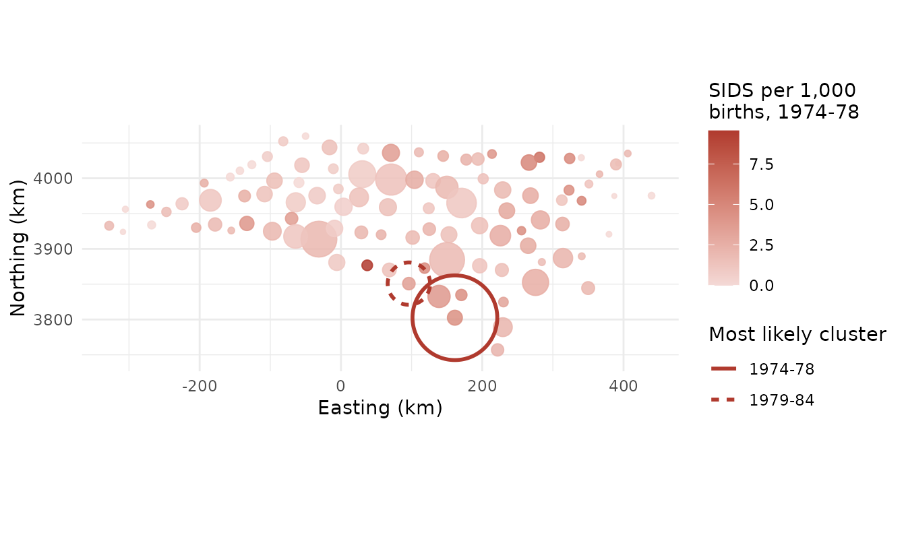
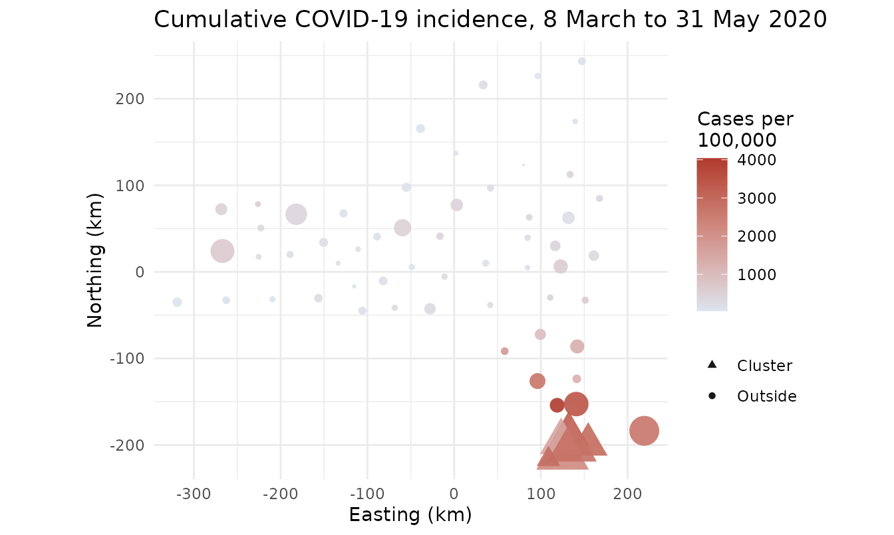
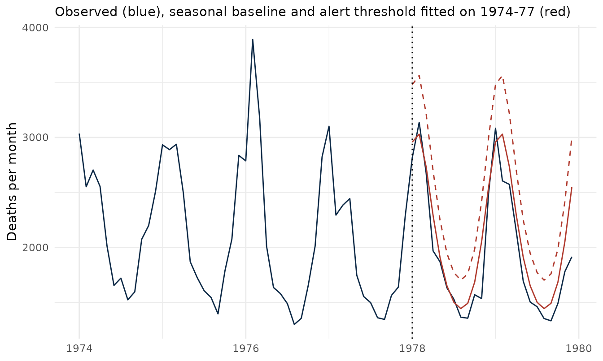

Cluster detection and surveillance
Source:vignettes/articles/cluster-detection.Rmd
cluster-detection.Rmd
library(tidyepidemio)
library(ggplot2)
red <- "#B03A2E"
navy <- "#0E2A47"Part 1. Is there a SIDS cluster in North Carolina?
The data. Sudden infant death syndrome deaths and
live births in all 100 North Carolina counties, 1974-78 and 1979-84
(nc_sids). The question: are deaths
concentrated anywhere more than births would predict?
epi_spatial_scan() places circles of several radii
around every county centroid, finds the circle with the largest Poisson
likelihood ratio, and compares it with the largest ratio in datasets
simulated under no clustering. The scan runs in compiled C++, so 999
simulations take well under a second.
set.seed(2024)
scan74 <- epi_spatial_scan(nc_sids, x_km, y_km, sids_1974, births_1974,
radii = c(30, 60, 90), nsim = 999)
scan79 <- epi_spatial_scan(nc_sids, x_km, y_km, sids_1979, births_1979,
radii = c(30, 60, 90), nsim = 999)
knitr::kable(
rbind(cbind(period = "1974-78", scan74), cbind(period = "1979-84", scan79))[
c("period", "center_x", "center_y", "radius", "observed", "expected", "relative_risk", "p_value")],
digits = 2
)| period | center_x | center_y | radius | observed | expected | relative_risk | p_value |
|---|---|---|---|---|---|---|---|
| 1974-78 | 161.28 | 3802.49 | 60 | 54 | 26.32 | 2.14 | 0.00 |
| 1979-84 | 96.15 | 3850.79 | 30 | 16 | 5.18 | 3.13 | 0.01 |
draw_circle <- function(s, label) {
t <- seq(0, 2 * pi, length.out = 200)
data.frame(x = s$center_x + s$radius * cos(t), y = s$center_y + s$radius * sin(t), period = label)
}
circles <- rbind(draw_circle(scan74, "1974-78"), draw_circle(scan79, "1979-84"))
nc_sids$rate <- 1000 * nc_sids$sids_1974 / nc_sids$births_1974
ggplot(nc_sids, aes(x_km, y_km)) +
geom_point(aes(size = births_1974, colour = rate), alpha = 0.85) +
geom_path(data = circles, aes(x, y, linetype = period), colour = red, linewidth = 1) +
scale_colour_gradient(low = "#F4D9D6", high = red, name = "SIDS per 1,000\nbirths, 1974-78") +
scale_size_area(max_size = 9, guide = "none") +
coord_equal() +
labs(x = "Easting (km)", y = "Northing (km)", linetype = "Most likely cluster") +
theme_minimal()
Both periods show a significant cluster in the south-east of the state: in 1974-78 it covers Robeson, Bladen and Columbus counties, and in 1979-84 the neighboring Scotland County. Excess SIDS mortality in this part of North Carolina is a long-noted feature of the dataset.
Part 2. Where and when did COVID-19 cluster in New York State?
The data. Weekly confirmed COVID-19 cases in New
York’s 62 counties for 13 weeks in spring 2020, with county populations
(ny_covid_counties_2020). The question:
which area and which run of recent weeks had the greatest excess?
epi_spacetime_scan() adds a time window: it considers
every circle together with every window of the most recent weeks.
set.seed(2020)
st <- epi_spacetime_scan(ny_covid_counties_2020, x_km, y_km, week_0308:week_0531, population,
radii = c(20, 50, 100), nsim = 199)
knitr::kable(st[c("radius", "window", "observed", "expected", "relative_risk", "p_value")], digits = 3)| radius | window | observed | expected | relative_risk | p_value |
|---|---|---|---|---|---|
| 50 | 10 | 235666 | 143236 | 2.747 | 0.005 |
ny <- ny_covid_counties_2020
inside <- sqrt((ny$x_km - st$center_x)^2 + (ny$y_km - st$center_y)^2) <= st$radius
ny$in_cluster <- ifelse(inside, "Cluster", "Outside")
ny$rate <- 1e5 * rowSums(ny[grep("^week_", names(ny))]) / ny$population
ggplot(ny, aes(x_km, y_km)) +
geom_point(aes(size = population, colour = rate, shape = in_cluster), alpha = 0.9) +
scale_colour_gradient(low = "#DCE4EE", high = red, name = "Cases per\n100,000") +
scale_size_area(max_size = 10, guide = "none") +
scale_shape_manual(values = c(Cluster = 17, Outside = 16), name = NULL) +
coord_equal() +
labs(x = "Easting (km)", y = "Northing (km)", title = "Cumulative COVID-19 incidence, 8 March to 31 May 2020") +
theme_minimal()
The cluster is the five boroughs of New York City plus Nassau County over the first ten weeks, the epicenter of the United States’ spring 2020 wave.
Part 3. Screening monthly deaths against a seasonal baseline
The data. Monthly deaths from bronchitis, emphysema
and asthma in the UK, 1974-79 (datasets::ldeaths).
The question: were any months in 1978-79 unusually
high, given the strong winter seasonality?
Fit a seasonal baseline on 1974-77 only, then screen 1978-79. A negative binomial baseline allows for overdispersion, and Holm’s adjustment controls the chance of any false alert over the 24 months screened.
uk <- data.frame(time = as.numeric(time(datasets::ldeaths)), deaths = as.numeric(datasets::ldeaths))
training <- subset(uk, time < 1978)
screen <- subset(uk, time >= 1978)
s <- epi_seasonal_surveillance(screen, time, deaths, training = training, period = 1,
harmonics = 2, family = "negbin", adjust = "holm")
sum(s$alert)
#> [1] 0
ggplot(uk, aes(time, deaths)) +
geom_line(colour = navy) +
geom_line(data = s, aes(y = threshold), colour = red, linetype = 2) +
geom_line(data = s, aes(y = baseline_expected), colour = red) +
geom_vline(xintercept = 1978, linetype = 3) +
labs(x = NULL, y = "Deaths per month",
subtitle = "Observed (blue), seasonal baseline and alert threshold fitted on 1974-77 (red)") +
theme_minimal()
No month in 1978-79 exceeds what the seasonal pattern predicts.
Reading the results
- A small p-value says the most likely cluster is unlikely under a homogeneous Poisson null; it does not prove a common cause.
- Circles are drawn around centroids in projected kilometers. Use projected coordinates, not longitude and latitude.
- An alert is a signal to investigate, not an outbreak diagnosis.